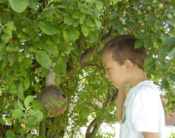

I am more familiar with the habits of the house wren than those of the Carolina, as they nest in the wren houses I hang in my yard every spring. I try to put them out by mid-April or earlier, and it is a true delight to me to first hear the male's bubbly song, which soon becomes incessant to the ear. But in the years that they are late arriving, I feel a bit bereft.
Whenever I grow tired of a bird's song, I think of Robert Frost's poem, A Minor Bird:
I have wished a bird would fly away,
And not sing by my house all day;
Have clapped my hands at him from the door
When it seemed as if I could bear no more.
The fault must partly have been in me.
The bird was not to blame for his key.
And of course there must be something wrong
In wanting to silence any song.
The house wren is a bit smaller than the Carolina, about five inches in length, and it is constantly in motion, often with tail cocked. The male will choose a nesting site, construct a nest and wait for the female's approval. He may build or begin to build several nests at different locations before starting their family at which time she will either completely rebuild the nest or, if it's to her liking, add soft lining materials. I believe the multiple nests are built more to confuse predators than trying to anticipate the whims of the female, but also it could be done to establish territory.
I am never sure in which of the four or five wren houses I put out they are actually nesting. When I clean out the houses in the fall, I find – in all of them - sticks of almost identical length, about 1 1/2 inches long, with feathers, moss, bark, bits of Styrofoam or other trash providing the lining. Some of the small wooden houses are literally packed with nesting material.
Anywhere from two to eight speckled ivory eggs are incubated by the female, the male providing her nourishment during this time. In spite of hatching featherless in 13 days, the young become fledglings within 15 to 19 days. The young are fed - from my observation - from dawn to sundown and maybe longer. I have perched behind my camera tripod trying to capture photos of one or the other coming and going, and it's a challenge.
From National Geographic's Song and Garden Birds: "Wrens have a strong feeding instinct and are tireless parents. One male, working from 4:15 a.m. to 8:00 p.m., made 1,217 trips in a single day with food for his family. He averaged a trip every 47 seconds, not counting the sorties that he made to satisfy his own hunger." It feeds on the ground and in foliage for insects. Just think, each trip represented an insect dispatched!
The wrens' feeding instinct is so strong, "they have been seen feeding a family of grosbeaks, also a nestful of sparrows, which are among the wren's worst enemies."
A friend has told me that when he splits firewood, wrens appear from everywhere. As fall approaches, the wrens seek more secluded areas, and during the fall they migrate southward.
My mother, early one morning, watched parent wrens leading their fledglings, one by one, away from the house that was hung in a lilac tree outside the bedroom window to the nearby meadow. My parents had wrens nest in the yard every year for about 17 years. Eerily, when my mother slipped into Alzheimer's Disease they no longer came, even though I faithfully hung the same houses in the same locations. After her passing, I had to woo them back providing several possible nesting sites. My parents loved to hear the male's cheery twittering and the female's "buzzing." This is my theory that I've not seen anything in print to back up – that the female "chucks" at the male, and when he's in the mood, he will sing. I've not heard any variation from the wrens' song in this area.
The house wrens have been described (Wikipedia) as "feisty and pugnacious." I would say this is true but perhaps an understatement! I've seen a wren pursuing a large fox squirrel, darting in to give it pecks on the head. It will stand up to much larger birds than itself, fiercely protecting its turf and its young. They are amazing little birds.
It's hard to tell what will appeal to a house wren for a nesting site. I once hung a cute new wooden green apple wren house to no avail; instead they chose the old, wooden houses my parents used that required patching every year. Those houses finally fell apart, beyond repair. House wrens also showed preference for a birdhouse gourd with appropriate sized entry (about 1¼ inch) hung in an apple tree on the front lawn for years until the entrance became large enough for a sparrow and I quit using it. I once set a stepladder beneath the gourd and let my youngest grandson Brett watch the tiny hungry babies squeaking for food, their little beaks open wide, and their barely feathered wings fluttering. (See photos)
When I visited friends and relatives in Florida, my brother made me a cute wooden birdhouse designed like a cat, complete with tail, bright yellow with white stripes and a red smiling mouth painted around the entrance. I had my doubts, but I hung it in the apple tree where the gourd used to hang. Wrens nested in it all summer long. It made a cute photo – a tiny wren perched next to the cat's mouth – a bit sadistic, maybe. Wrens also have liked a blue ceramic "bird" birdhouse that my brother and sister-in-law sent me for my birthday one March. I used the top of a liter soda bottle and a glue gun to convert the opening to a proper size for wrens.
Wrens are delightful creatures to hear and to observe in their daily lives. How blessed we are to have them in our world!
